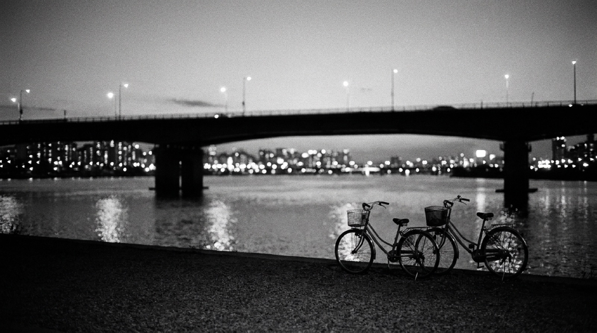
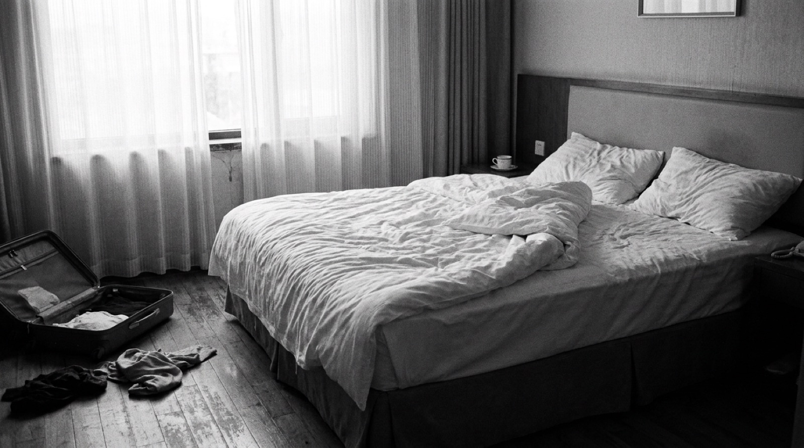
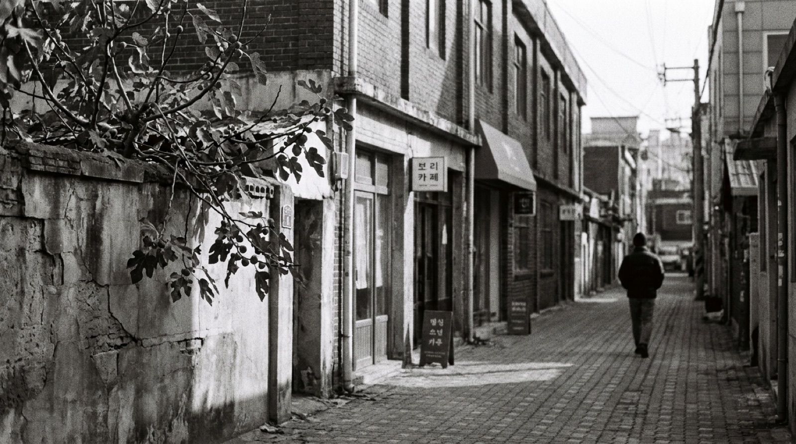
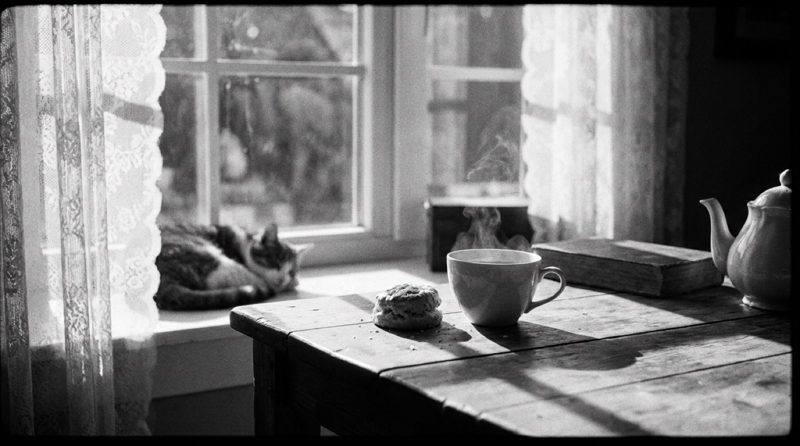

01
여름밤 한강
밤 열한 시, 막차를 보내고 우리는 강변에 남았다. 편의점 봉지, 미지근한 바람, 다리 위의 불빛. 아무것도 하지 않았는데, 전부였다.
A night we did nothing. It was everything.
TOP 우디 · MID 머스크 · BASE 아쿠아

何もしなかった夜ほど、忘れられない。
스무 살의 우리는 밤새 강변에 앉아 아무것도 하지 않았다.
그 밤은 어디에도 기록되지 않았지만, 아직 어제처럼 선명하다.
USÉLESS SEOUL은 그 시간의 공기를 병에 담는다.
The most useless hours are the ones we never forget.
향 하나마다, 청춘의 한 장면.
01
밤 열한 시, 막차를 보내고 우리는 강변에 남았다. 편의점 봉지, 미지근한 바람, 다리 위의 불빛. 아무것도 하지 않았는데, 전부였다.
A night we did nothing. It was everything.
TOP 우디 · MID 머스크 · BASE 아쿠아

02
낯선 도시의 아침 열 시. 체크아웃까지 사십 분, 이불 속에서 버티는 중. 여행에서 제일 기억에 남은 건 결국 이 순간이었다.
Check-out at eleven. Not moving until ten fifty.
TOP 클린 · MID 라벤더 · BASE 머스크

03
계획은 없었다. 골목을 잘못 들었고, 공장을 고친 카페 창가에 무화과 나무가 있었다. 그날 한 일은 그게 전부. 그래서 좋았다.
A wrong turn, a fig tree, a whole afternoon.
TOP 과육 · MID 우디 · BASE 앰버

04
해가 긴 날이었다. 할 일을 미루고 홍차를 우렸다. 김이 올라오는 동안 아무 생각도 하지 않았다. 가장 비생산적인 시간이, 가장 좋은 시간이었다.
The least productive hour. The best one.
TOP 베르가못 · MID 홍차 · BASE 머스크
다음 장면들 — 출시를 기다리는 열 개의 시간. TEASER · 판매 제품 아님
첫눈 내린 아침, 세상이 잠깐 조용해진다.
밤을 다 쓰고 돌아가는 길, 창밖으로 흐르던 불빛.
볕이 드는 한옥 마당, 종이와 햇살의 냄새.
네온 아래 금속의 골목, 어른이 된 척하던 밤.
약속도 없이 오른 아침 숲길, 젖은 풀냄새.
아침 솔숲, 맑게 깨어나는 푸른 공기.
처마 끝 곶감처럼, 천천히 익어가던 가을.
잔디밭에 앉아 통째로 써버린 오후.
되돌릴 수 없어서, 잊히지 않는 밤을 위해.
하루가 끝난 뒤에도 남아 있는 도시의 기분.
위 열 가지는 아직 병에 담기지 않은 장면입니다. 어떤 시간부터 담을지, 천천히 고르는 중.
DO NOT DRINK!
디퓨저는 마실 수도, 먹을 수도, 입을 수도 없습니다. 방 안의 공기를 아주 조금 바꿀 뿐입니다. USÉLESS SEOUL은 그 "아주 조금"을 만듭니다 — 효율로는 설명되지 않는 감각, 기억, 장면 같은 것들. 서울을 병에 담아 방에 두는 일. 쓸모는 없지만, 버릴 수 없는 것.